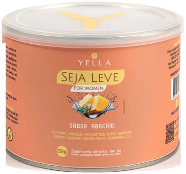
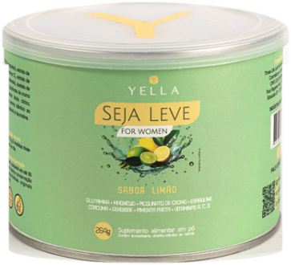
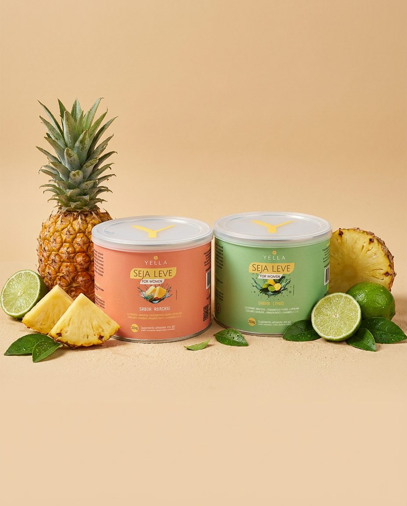
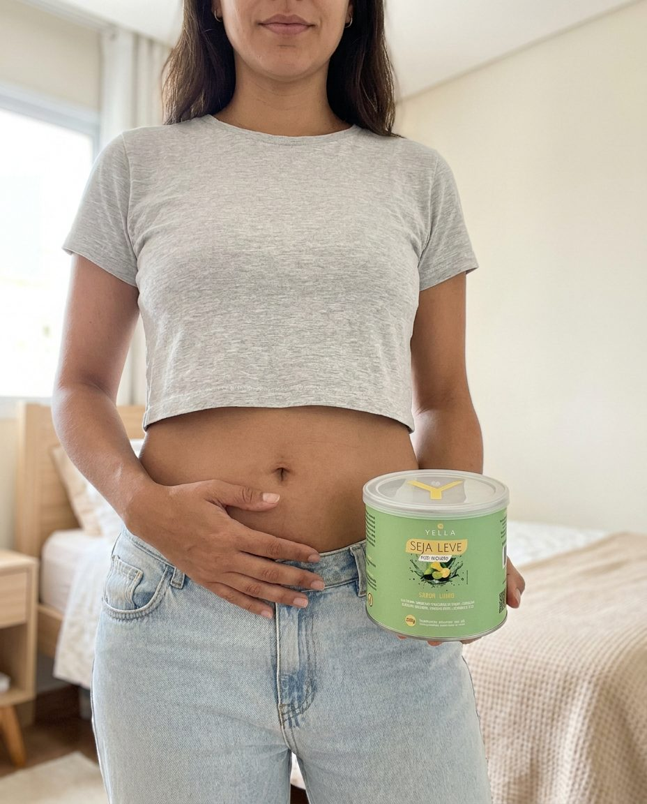
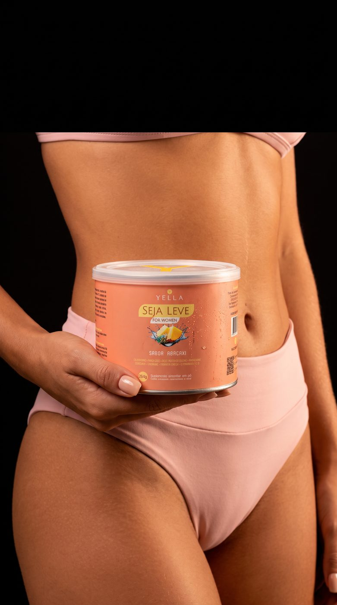
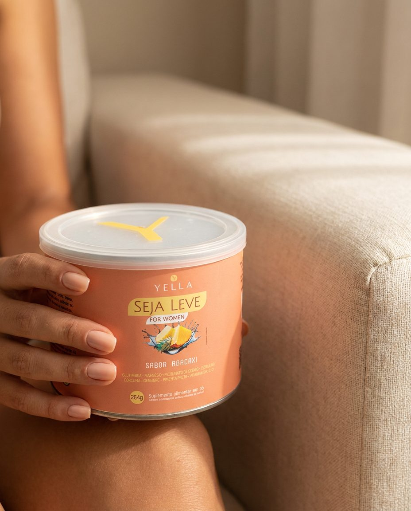
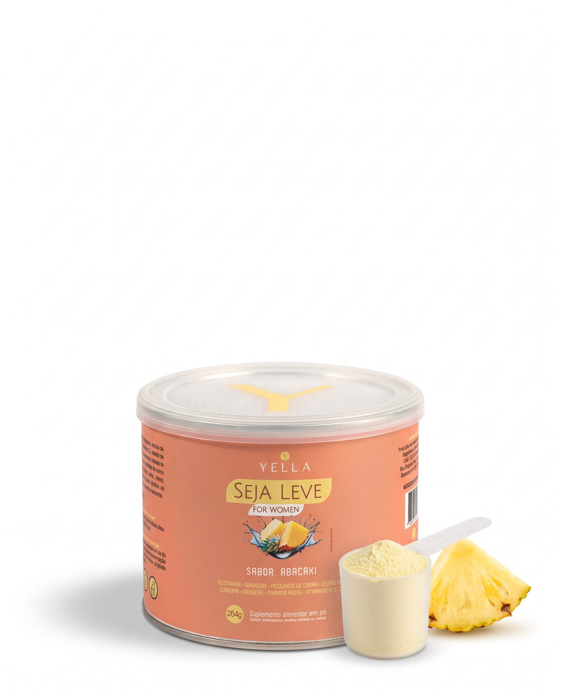
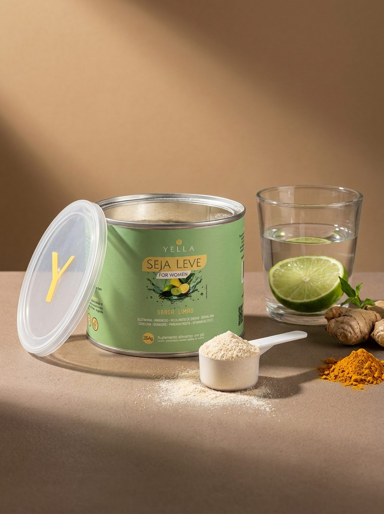
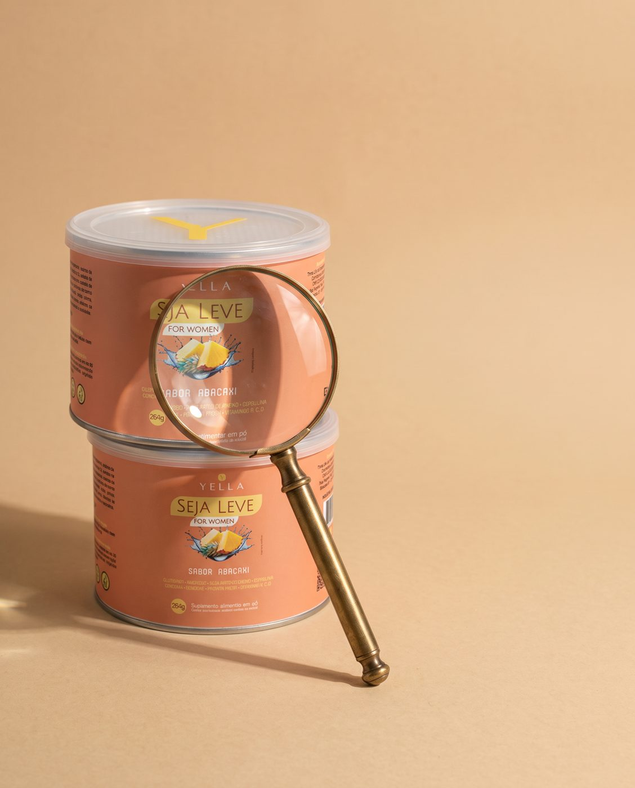
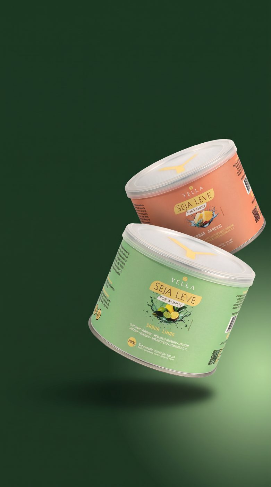

Abacaxi
Limão22 doses · 1 mês de rotina · 12x de R$ 19,01 · Cashback 12% (R$ 22,32)
3 potes · 90 dias · 12x de R$ 36,80 · R$ 120,00 por pote · Cashback 12% (R$ 43,20)
✓ Frete grátis ✓ 1 pote inteiro de presente (cobre o ciclo completo da flora)
4 potes · 120 dias · 12x de R$ 47,53 · R$ 116,25 por pote · Cashback 12% (R$ 55,80)
✓ Frete grátis ✓ 1 pote de presente + máxima economia por dose

Um shot por dia, pela manhã. Zero açúcar, sem glúten, sem lactose e 100% vegano, em sabor Abacaxi ou Limão.
Relatos e registros de mulheres reais que transformaram a digestão, o volume abdominal e a relação com a comida. Resultados individuais podem variar.



Foi na calça de alfaiataria que passou a marcar no meio da tarde, na foto em que você precisou prender a respiração, no dia em que comer uma simples salada deixou sua barriga estufada como se tivesse comido um banquete. Não é falta de força de vontade — é disbiose e inflamação intestinal. Quando as bactérias boas diminuem e a parede do intestino inflama, cortar calorias por cima não devolve a leveza que vem de dentro.
O Seja Leve For Women é o modulador intestinal e metabólico diário da Yella Life, desenvolvido para a mulher 35+ que busca abdômen desinflamado, saciedade natural e vitalidade sem fórmulas agressivas. Une 7,8g de Inulina prebiótica a um complexo de 11 ativos naturais em sabores refrescantes de Abacaxi ou Limão.

Chega intacto ao intestino grosso, nutre as bactérias boas, repara a mucosa inflamada e estimula a produção de Butirato e GLP-1.
Mulheres contemporâneas 35+ que sofrem com inchaço abdominal, intestino irregular, fadiga e vontade de doces, e desejam destravar o metabolismo de forma natural. 100% vegano, sem glúten e sem lactose.
1 vez ao dia, preferencialmente pela manhã, dissolvendo 2 scoops em 200ml de água gelada. Lata com 22 doses.
Apaga a microinflamação da parede intestinal, reduzindo o estufamento após as refeições e a retenção de líquidos.
As 7,8g de fibras prebióticas (Inulina) servem de substrato exclusivo para multiplicar a flora protetora — a mesma encontrada em mulheres de metabolismo naturalmente enxuto.
A fermentação das fibras pelas bactérias boas produz Butirato, que estimula as células L do intestino a liberarem GLP-1, prolongando a saciedade por horas.
Com a sinalização de GLP-1 ativa e a glicemia estabilizada pelo Picolinato de Cromo, a fome ansiosa da tarde perde a força.
Um intestino desinflamado absorve micronutrientes com eficiência e para de drenar sua vitalidade em processos inflamatórios silenciosos.
Resultados podem variar de pessoa para pessoa. Os benefícios descritos dependem do uso contínuo aliado a hábitos saudáveis.
Nenhum deles está ali por acaso. Veja o que cada grupo resolve no seu organismo.

Chega intacta ao cólon para alimentar seletivamente as bactérias benéficas, gerando Butirato e estimulando a liberação natural do hormônio da saciedade (GLP-1).
Composto por: Inulina (7,8g de fibra prebiótica por dose)Fecha as microfissuras da parede intestinal (intestino permeável), impedindo que toxinas vazem para o sangue, enquanto reduz gases, estufamento e inflamação abdominal.
Composto por: Glutamina, Cúrcuma (Açafrão), Gengibre e Pimenta-preta (Piperina)Otimiza a sensibilidade à insulina e evita os picos e quedas de glicose que disparam o desejo urgente por açúcar e carboidratos.
Composto por: Picolinato de CromoApoia a motilidade intestinal natural (sem efeito laxante), promove detox celular diário e sustenta a energia, a imunidade e o viço da pele.
Composto por: Espirulina, Magnésio, Vitamina A, Vitamina C e Vitamina DInulina (7,8g), L-Glutamina, Cúrcuma, Gengibre, Espirulina, Magnésio, Picolinato de Cromo, Pimenta-preta, Vitamina A, Vitamina C e Vitamina D. Adoçado naturalmente com stévia. 100% vegano, zero açúcar refinado, sem glúten, sem lactose e sem laxantes.
A ciência da microbiota mostra que o intestino não é apenas um tubo digestivo — é o centro de comando do seu metabolismo e dos seus hormônios. Veja as 4 vias biológicas acionadas diariamente pelo Seja Leve:
A Glutamina e os curcuminoides regeneram as junções da mucosa intestinal, barrando a endotoxemia metabólica (inflamação que trava o emagrecimento).
Dose clínica de 7,8g de Inulina fermentada pelas bactérias boas, elevando o Butirato endógeno e ativando receptores de saciedade natural.
A mulher que não vai ao banheiro todos os dias reabsorve estrogênio no intestino, desregulando todo o metabolismo. O trânsito regular elimina esse excesso hormonal.
Menos oscilações de glicose ao longo do dia significam menos cortisol, menos acúmulo de gordura abdominal e energia constante.

Adicione 200ml de água bem gelada (ou morna, se preferir) em um copo ou coqueteleira.
Adicione 2 scoops (colher dosadora inclusa na lata — equivalente a 10g) do seu Seja Leve sabor Abacaxi ou Limão. Se o seu intestino for mais sensível, comece com 1 scoop nos primeiros dias.
Mexa bem por alguns segundos até obter um suco leve, refrescante e naturalmente adoçado com stévia.
Beba 1 vez ao dia, preferencialmente em jejum ou pela manhã, de forma contínua para nutrir suas bactérias boas todos os dias.
Sem promessa de milagre. Uma expectativa honesta para você acompanhar a resposta do seu corpo.
Você percebe o alívio na digestão, redução dos gases pós-refeição e o intestino começando a funcionar com regularidade, sem cólicas e sem correria ao banheiro.
Com a parede intestinal menos inflamada e a sinalização de GLP-1 ativada pelas bactérias boas, aquela fome ansiosa da tarde diminui drasticamente e as calças começam a folgar na cintura.
Seu microbioma já está mais povoado por bactérias protetoras. A disposição matinal aumenta, a pele ganha viço e o controle sobre as porções acontece naturalmente.
É a janela ideal de renovação da microbiota e equilíbrio metabólico profundo. Por isso o kit Leve 2, Ganhe +1 (3 potes) faz tanto sentido: cobre os 3 meses completos sem interromper sua rotina.
Comparação entre a fórmula sinérgica do Seja Leve For Women e soluções comuns do mercado.
| Critério | Seja Leve For Women | Fibras comuns de farmácia | Chás Detox / Laxantes |
|---|---|---|---|
| 7,8g de Inulina prebiótica em dose real | ✓ | Varia (doses baixas) | — |
| Ativa naturalmente o GLP-1 (saciedade) | ✓ | — | — |
| 11 ativos naturais (Desinflama + Nutre + Dá Energia) | ✓ | — | — |
| Reduz a vontade de doces (Picolinato de Cromo) | ✓ | — | — |
| Repara a parede intestinal (Glutamina + Cúrcuma) | ✓ | — | — |
| Sem cólicas, sem efeito laxante e sem rebote | ✓ | ✓ | — (agride a flora) |
| 100% vegano, sem glúten, sem lactose e com stévia | ✓ | Varia | Varia |
Quanto maior o kit, menor o investimento por pote. O kit Leve 2, Ganhe +1 entrega 3 potes e cobre os 90 dias de consolidação da microbiota com Frete Grátis.

Tomei por 20 dias e não fico mais pensando em comida o tempo todo. Perdi 2kg sem fazer dieta, só de comer menos porque meu corpo pediu menos.
Gisele M., 29 anos, MaceióA fórmula é incrível: inulina em dose real, glutamina, açafrão. Hoje indico para minhas pacientes com intestino irritável.
Júlia C., Nutricionista, CuritibaTomei 3 meses seguidos sem dieta radical. O segredo foi desinflamar: parecia que carreguei litros embora.
Mariana O., 42 anos, Porto AlegreEstou no meu segundo pote e o que me surpreendeu mesmo foi a saciedade. Parece que meu corpo entrou no eixo.
Renata A., 42 anos, São PauloNão. O Seja Leve regula o intestino nutrindo as bactérias boas com 7,8g de fibras prebióticas e reparando a mucosa, sem agredir a flora e sem efeito laxante.
A Inulina chega intacta ao intestino grosso e é fermentada pelas bactérias benéficas, produzindo Butirato — um ácido graxo de cadeia curta que estimula as células L intestinais a liberarem o hormônio da saciedade (GLP-1).
Não. O objetivo é justamente devolver a sinalização natural de saciedade e reduzir a vontade de doces para que você tenha equilíbrio sem sacrifícios extremos.
Não. É 100% vegano, sem glúten, sem lactose e adoçado naturalmente com stévia.
Porque a remodelação da microbiota intestinal e a desinflamação metabólica são progressivas. Com 3 potes você garante o ciclo de 90 dias contínuos com Frete Grátis.
Checkout 100% seguro com criptografia SSL. Cartão em até 12x, Pix, Boleto e NuPay.
Equipe dedicada via WhatsApp (11) 94020-5957 e e-mail, de 2ª a 6ª das 9h às 17h30.
Fórmula vegana, ingredientes naturais selecionados e produção em conformidade com as normas da ANVISA.
O resultado na microbiota e na saciedade está ligado à constância diária. O kit Leve 2, Ganhe +1 existe justamente para você não parar no meio do caminho.